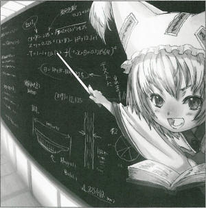

| Season 120, 1st of the Planting Month (May)
Width of the Sanzu Successfully Calculated
The mathematics magician did this to kill time... On X month X day, the mathematics magician calculated the width of the Sanzu River, surprising related parties. The Sanzu River is the river which flows between this world and the next. This river isn't fixed in width; rather, it is famous for extreme length changes according to various factors. Because of this, calculating the width of the river has been understood to be impossible. The mathematics magician who accomplished this feat is Ran Yakumo (Shikigami). She's usually strong with numbers, being able to answer complicated equations instantly, startling those around her. When asked why she had the thought to calculate the width of the Sanzu River, she simply replied that it was to kill some time. While our readers may wonder about width of the Sanzu River, to understand the equations, one would need some degree of specialized knowledge. For that reason, this article will not go into the details of the expressions. I suggest those interested ask her directly. It generally goes like this: "The Sanzu River is not a normal river, but one that carries away the past. This is why the actual length is different from the observed length. It is necessary to know the histories of the deceased to calculate that distance. The breadth of the river, depending on the person, can take either a short instant to cross or an infinitely long time. Humans may not know what factor determines this, but it has been said to be the ferryman's fee. The more you pay the ferryman, the shorter the distance. Plotting the curve of this inversely proportional function, we see that the closer to 0 you pay the ferryman, the closer the distance approaches infinity; the more you pay, the closer the distance approaches 0." Also, wealth in the other world is not the same thing as wealth in the present world; humans cannot bring their fortune from this world to the next when they die. That is why it seems the amount of the payment is determined by other factors. From here on, the calculations take into account factors such as the histories of the deceased, where several thousand expressions are needed to solve the equation. Even if they are successfully calculated, the results are so complicated, nobody is able to prove them. With no way to find out if it is correct, I don't think this is of the slightest use.
(Aya Shameimaru)
|
|
Ran This is correct, you know? Aya Hmmm. I haven't seen such a grandly useless feat in a long time. Ran Didn't I already mention that I did this out of boredom? Aya But you are really good with mathematics, unlike me. Ran Here, an equation of a thousand expressions. Aya Ack! Ran And here is the proof. Aya Ughhhhh. Ran I'm a shikigami, so such things come naturally to me. Aya ...Do you always think of such things when bored? Ran I try to calculate things like how many particles it would take to blanket Gensokyo with mist or how long it would take to reach the North Star. Aya You must always be really bored. Ran I've got time to rot away, since Miss Yukari is sleeping all the time.... Aya Is this what you meant when you said shikigami are good with numbers? Ran When it comes to numbers, equations themselves are shikigami. Just as equations that neither diverge nor converge produce an infinite number of useful solid objects, so do the equations Miss Yukari uses make my power invincible. I therefore act as the equations tell me. Aya So that's how it is. I don't think I could keep making pre-determined actions. It'd be too constricting. Ran Even if you could fly many times faster than you do now? Even if you could become many times stronger? Aya Speed means nothing if it's decided for me. Flying free is what has meaning. Ran Even if you could land many times more scoops? Aya Ngh! Ran ...Do you want me to make you my shikigami? Aya Please spare me....wait, aren't you a shikigami yourself? Ran I'm a shikigami, but I can also use shikigami. I'm controlling one right now. Aya That's surprising. Ran If it weren't so, then you wouldn't know the reason I determined the width of the Sanzu, would you. Aya Oh, I see - since you use a shikigami, you're good with equations, which means that even as you're run by equations, you're also controlling them... Ran Yes. Aya You think up a new formula, and you create a formula that will solve it. So your master...is better at numbers than you are? Ran It goes without saying that there is no comparison. I could neither solve nor understand Miss Yukari's equations. Aya How terrifying.... Ran Miss Yukari would determine not only the Sanzu's width but also the depth of the bottom of Avici. She'd find out how long it would take Ursa Major to devour the North Star, all in an instant. Normally all she does is sleep, but the instant she opens her mouth, she gives orders no one else would think up. Aya This conversation's gone into a whole other dimension. So there are still youkai around with that much power...
Ran Yakumo Yukari's shikigami, she acts when her master is asleep. Though she is a shikigami, she is able to use shikigami herself. Appearances: Perfect Cherry Blossom, Imperishable Night |
| [PREVIOUS ARTICLE : Yukari] | [INDEX] | [NEXT ARTICLE : Chen] |